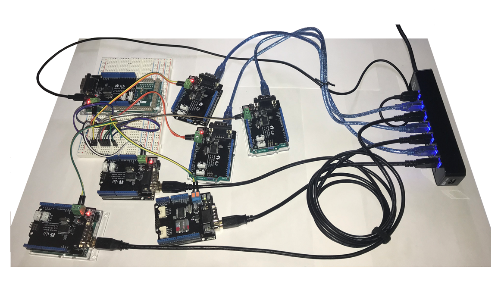
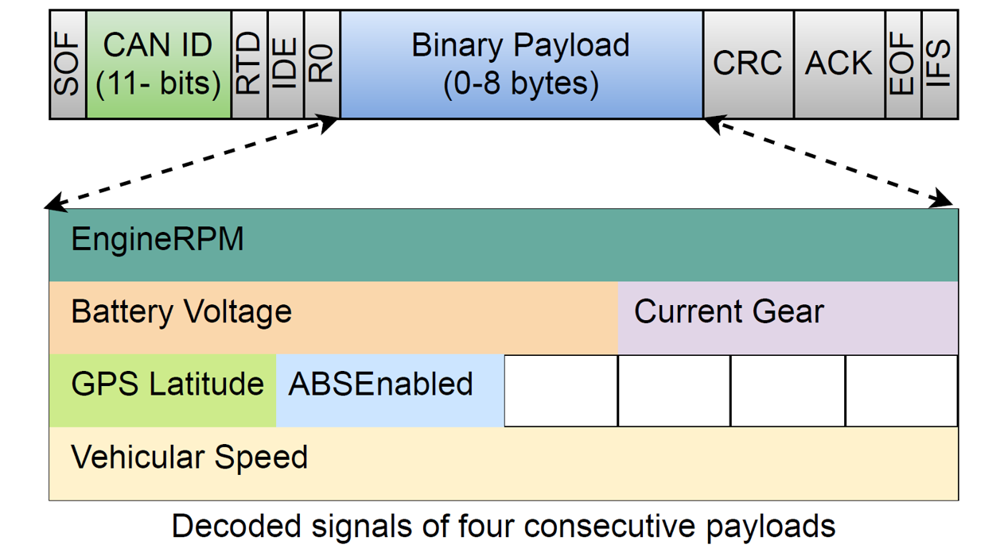

Automotive Network & Cyber-phyical Security

Bootstrapping Secure Communication for CAN/CAN-FD Bus
Modern vehicles rely on a fleet of electronic control units (ECUs) connected through one or more automotive communication networks, such as the CAN/CAN-FD bus, for real-time subsystem control. Originally developed for real-time onboard communication, these networks are heavily criticized for little-to-none security and the alarming susceptibility to intrusions. Eyeing on this security deficiency and recent standardization effort by AUTOSAR, we proposed a session key establishment scheme for CAN/CAN-FD bus, making innovative use of secret sharing, an efficient cryptographic primitive, for and bootstrapping communication security against injection/intrusion attacks. [Prototype souce code]

Signal-based Intrusion Detection for CAN Bus
Recent attacks show that automotive buses are no longer secure. They can be accessed by attackers though an exposed wired or wireless interface. At the absence of a relible message authenticity/integrity mechanism (like the one mentioned above), advanced attackers can inject false data to the CAN signal level, while looking innocuous by the pattern/frequency of the CAN messages (i.e., the payload level). To fight against such intelligent attacks, we propose CANShield, a signal-based intrusion detection system (IDS) for the CAN bus. CANShield is comprised of a novel data processing pipeline that transforms signal-level CAN data into 2D time series data, and a deep autoencoder-based anomaly detection module that is responsive to various intrusion attacks of different time scales. Preliminary experimental results on a high-fidelity signal-based CAN attack dataset (provided by ORNL) show the high accuracy and responsiveness of CANShield in detecting five advanced signal-level intrusions.
Methodology & Proposed Work
◾ Our current defense methodology for automotive communication networks boils down to two lines of defense: bootstrapping secure communication with cryptographic protocols or secure hardware (prevention as 1st line) and machine-learning-based intrusion detection (detection as 2nd line).
◾ We will consider another line of defense, which would be resilience/fault-tolerance mechanisms to quicky recover from the damaged state, potentially leveraging redundancy or distributed consensus.
◾ We plan to extend the prevention-detection-resilience methodology to securing emergent cyber-physical systems (CPS), such as intelligent IoT systems, automotive Ethernet, and sensor networks.